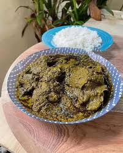

Home
Riz sauce bawin

Le riz à la sauce bawin est un super mets ivoirien qui provient de l'ouest de la Côte d'ivoire
Les ingrédients :
- Feuilles de manioc
- Viande de brousse
- Poisson sécher
- Poisson fumé
Etapes de la préparation :
- Faire les Feuilles de manioc
- Ajouter la Viande de brousse
- Ajouter les poissons
- Ajouter l'Assaisonnement
- Laisser mijoter 90 minutes
- Servir avec le riz, de la bière ou du vin